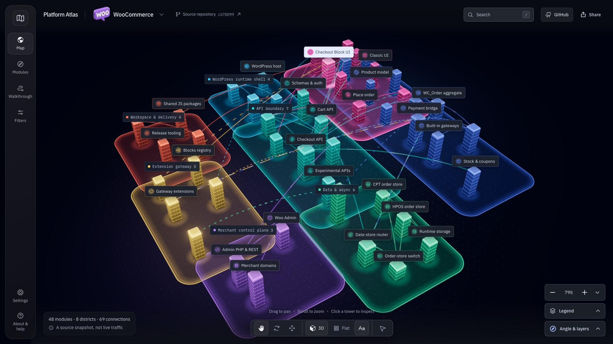

WooCommerce
From block checkout to the Store API, orders, and payment boundaries.
A codebase is easier to approach when you can see how it fits together. Explore WooCommerce and Gumroad as cities, then follow the connections back to source.

Step insideChoose a repository and look around. When you want a route through it, open a walkthrough. The included maps are curated snapshots, not live scans.
From block checkout to the Store API, orders, and payment boundaries.
Follow a digital purchase from storefront and payment to fulfillment and settlement.
You don’t have to read a whole repository to find a useful starting point. Keep the map beside the code, and check the evidence as you go.
Try a guided walkthroughExplore a district, search for a module, or use the module index when you want a simpler reading view.
Select a tower for its source panel. A walkthrough follows a specific path through the curated map.
Follow a listed file or directory to the pinned GitHub revision. Source evidence is not proof of live traffic, enabled features, or deployment.
Platform Atlas is a source-grounded architecture explorer by @doniv01. The idea is simple: give an unfamiliar codebase a shape, and keep the files within reach.
The viewer is a static site. Run it locally, host it on GitHub Pages, or use the source tooling to generate an exploratory pack from a fetched WooCommerce or Gumroad revision. Generated packs are labelled separately from the curated demos.
Independent project. WooCommerce and Gumroad are the repositories being explored; their inclusion does not imply affiliation or endorsement.